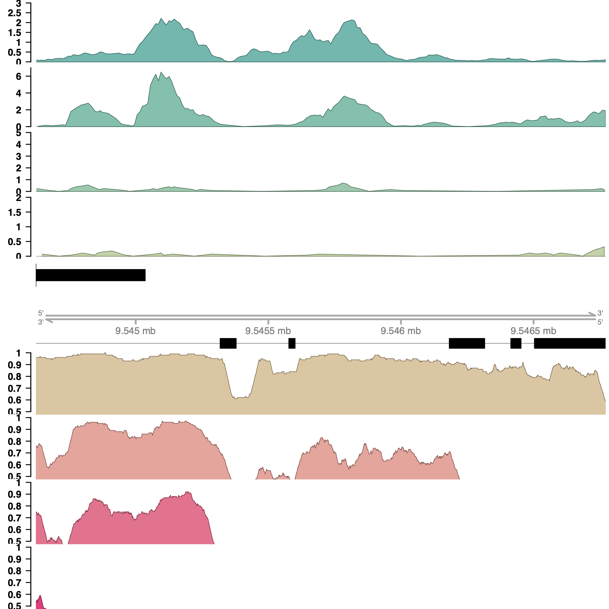
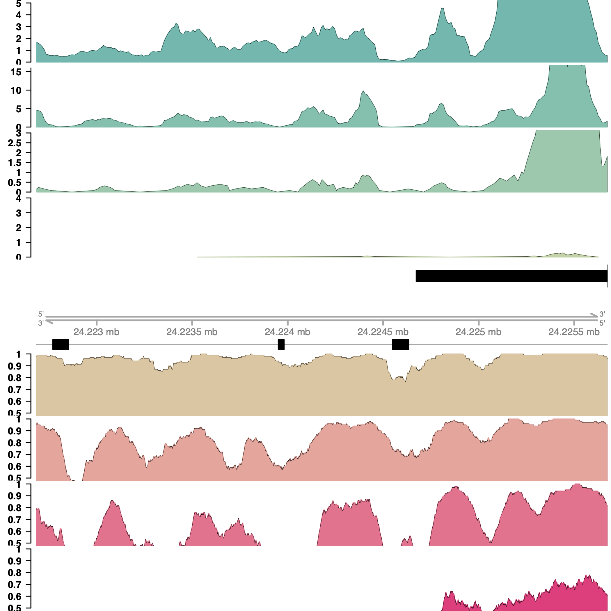

Identifying Cis-Regulatory Regions in the AEP Genome Using ATAC-seq and CUT&Tag
This document covers the mapping, filtering, peak calling, and plotting of whole-animal ATAC-seq and Cut&Tag data to identify cis-regulatory elements in the strain AEP H.vulgaris genome.
Identifying Cis-Regulatory Regions in the AEP Genome Using ATAC-seq and CUT&TagMapping ATAC-seq data to the AEP AssemblyCalling ATAC-seq PeaksMapping CUT&Tag data to the AEP AssemblyCalling CUT&Tag PeaksAnnotating Peaks by Their Nearest GeneCalculating Correlation Scores for CUT&Tag and ATAC-seq Biological ReplicatesVisualizing Read ATAC-seq and CUT&Tag read Distribution Around GenesSystematically Characterizing Read Distribution Around GenesGenerating Representative Plots for ATAC-seq, CUT&Tag, and Sequence Conservation Centered on Individual GenesIdentifying Transcription Factor Footprints using ATAC-seq DataFiles Associated with This Document
Mapping ATAC-seq data to the AEP Assembly
To analyze our whole-animal ATAC-seq data for the AEP strain of H. vulgaris, we begun by aligning each of the three biological replicates to the AEP assembly. The mapping process we used was as follows: we first used Trimmomatic (v0.36) to remove low quality base calls and contaminating adapter sequences. We also generated FASTQC (v0.11.4) reports before and after the Trimmomatic step to ensure the filtering was successful.
We next mapped the filtered reads to both the AEP assembly as well as the Hydra mitochondrial genome (downloaded from here and here) using bowtie 2 (v2.2.6). The ATAC-seq protocol targets all DNA, including mitochondrial DNA. This means that often a sizable portion of ATAC-seq reads are mitochondrial reads that provide no insight into chromatin accessibility in the nuclear genome. We therefore removed all reads from our AEP assembly-mapped alignment file that aligned to the mitochondrial genome.
We then performed some filtering of the aligned reads to remove unmapped or ambiguously mapped reads using samtools (v1.12) and Picard Tools (v2.17.8). Finally, we removed PCR duplicate sequences to prevent PCR biases introduced when amplifying the ATAC-seq libraries from interfering with the quantitative analysis of read counts.
The final output from this step was three bam files (AEP1_final.bam, AEP2_final.bam, and AEP3_final.bam), one for each biological replicate, containing all non-mitochondrial dedupliated uniquely mapped ATAC-seq reads.
Prior to running the mapping pipeline we first had to prepare bowtie references for both the mitochondrial and AEP assembly fasta files:
xbowtie2-build 105_mitochondrial_genome.fa hydra_mito
bowtie2-build HAVEP1_genome.fa hydra_genomeWe then used the following script for the alignment pipeline:
(01_atacPeaks/ATAC_Mapping_Pipeline.sh)
xxxxxxxxxx
# This code takes raw ATAC-seq reads in a fastq.gz format and generates a BAM file# This BAM file contains only unambiguously mapped, unique, non-mitochondrial reads# These BAM files are then used for downstream peak calling
########################
# The only argument needed for this script is the unique sample IDprefix="$1"
# create an initial fastqc report of both forward and reverse reads# we'll compare this to the filtered reads to ensure that trimming # was effective echo "initial fastqc report"fastqc -o . -t 2 resources/"$prefix"_ATAC_R*.fastq.gz
mv "$prefix"_ATAC_R1_fastqc.html "$prefix"_ATAC_R1_unfiltered_fastqc.htmlmv "$prefix"_ATAC_R2_fastqc.html "$prefix"_ATAC_R2_unfiltered_fastqc.html
mv "$prefix"_ATAC_R1_fastqc.zip "$prefix"_ATAC_R1_unfiltered_fastqc.zipmv "$prefix"_ATAC_R2_fastqc.zip "$prefix"_ATAC_R2_unfiltered_fastqc.zip
# use trimmomatic to remove adapter sequences and# stretches of low quality base calls.# It also sets the minimum read size to 32echo "filtering reads"java -jar resources/trimmomatic-0.36.jar PE -threads 16 -phred33 \ resources/"$prefix"_ATAC_R1.fastq.gz resources/"$prefix"_ATAC_R2.fastq.gz \ "$prefix"_ATAC_R1_trim_P.fastq.gz "$prefix"_ATAC_R1_trim_UP.fastq.gz \ "$prefix"_ATAC_R2_trim_P.fastq.gz "$prefix"_ATAC_R2_trim_UP.fastq.gz \ ILLUMINACLIP:resources/NexteraPE-PE.fa:2:30:10:2:true TRAILING:3 \ SLIDINGWINDOW:4:15 MINLEN:32 rm "$prefix"*trim_UP.fastq.gz # create a fastqc report of filtered reads# this ensures filtering worked well
# you should see: high phred scores across the entire# read length, a read length distribution that reflects# expectations for ATAC-seq data, and no overrepresented sequences
# looking at the GC distribution can also give you a# sense of bacterial contamination (curvibacter GC% is around 60)echo "post-filtering fastqc report" fastqc -o . -t 2 "$prefix"_ATAC_R*_trim_P.fastq.gz
# map the filtered reads to the H. mag 105 genome assembly (dovetail 1.0)# here I'm opting for quite sensitive, but relatively slow mapping
# This will require that you generate a bowtie2 reference in the# resources folder using the H. mag 105 reference genome# That can be found here:# research.nhgri.nih.gov/hydra/download/?dl=aslecho "mapping to genome reference"bowtie2 -X 1000 --very-sensitive-local --mm --threads 16 -S "$prefix"_genome \ -x resources/hydra_genome \ -1 "$prefix"_ATAC_R1_trim_P.fastq.gz -2 "$prefix"_ATAC_R2_trim_P.fastq.gz cat "$prefix".log "$prefix"_genome.metfile
rm "$prefix"_genome.metfile
# because the H. mag genome has mitochondrial sequence contamination,# we need to map reads separately to the mitochondrial reference# this let's us identify which reads are mitochondrial, so they# can be removed downstream
# we only need the read IDs, so we just pull the mapped read # IDs and disregard all other outputecho "mapping to mitochondrial reference"bowtie2 -X 1000 --very-sensitive-local --mm --threads 12 -x resources/hydra_mito \ -1 "$prefix"_ATAC_R1_trim_P.fastq.gz -2 "$prefix"_ATAC_R2_trim_P.fastq.gz | \ samtools view -S -F 4 - | cut -f 1 | sort | uniq > "$prefix"_mito_IDs.txt cat "$prefix".log "$prefix"_mito.metfile
rm "$prefix"_mito.metfile
# We then filter out mitochondrial reads from the genome mapped reads# using the read IDs we generated aboveecho "removing mitochondrial reads"java -Xmx16g -jar resources/picard.jar FilterSamReads \ I="$prefix"_genome \ O="$prefix"_genome_MF.sam \ READ_LIST_FILE="$prefix"_mito_IDs.txt \ FILTER=excludeReadList
# Here we filter reads to only include mapped read pairs with a # mapping quality of 3 or greater
# We then sort them by name, which is required for the fixmate command# we're performing nextecho "filtering ambiguous mappers and incoherent read pairs"samtools view -Su -F 524 -q 3 "$prefix"_genome_MF.sam | samtools sort -n -T "$prefix" -o "$prefix".bam
# fixmate fills in information about read pairs, such as the distance # between R1 and R2samtools fixmate -r "$prefix".bam "$prefix".fix.tmp.bam
# We'll again filter, this time removing improperly paired reads# We then sort by coordinatesamtools view -u -F 524 -f 2 "$prefix".fix.tmp.bam | samtools sort -T "$prefix".fix -o "$prefix".fix.bam
rm "$prefix".fix.tmp.bam "$prefix".bam "$prefix"_genome \ "$prefix"_mito_IDs.txt "$prefix"_genome_MF.sam
# We'll then use picard to mark perfectly duplicated read pairs# so that they can be removed laterecho "marking PCR duplicates"java -Xmx50g -jar resources/picard.jar MarkDuplicates \ I="$prefix".fix.bam \ O="$prefix"_markedDup.bam \ M="$prefix"_markedDup_metrics.txt \ ASSUME_SORT_ORDER=coordinate # the code below creates a report giving you a sense of how many PCR duplicates# were found in the data# these metrics were established by ENCODE and give a sense of how# much bottlenecking occured during the library prep
# this code is taken from the ENCODE ATAC pipeline (v1)# it can be found here:# encodeproject.org/pipelines/ENCPL792NWO/
# the table is formated as such:# TotalReadPairs [tab] DistinctReadPairs [tab] OneReadPair [tab] # TwoReadPairs [tab] NRF=Distinct/Total [tab] PBC1=OnePair/Distinct [tab] # PBC2=OnePair/TwoPair
# for more info on these metrics, see:# encodeproject.org/atac-seq/#standardsecho "generating PBC report"bedtools bamtobed -i "$prefix"_markedDup.bam \ | awk 'BEGIN{OFS="\t"}{print $1,$2,$3,$6}' \ | sort \ | uniq -c \ | awk 'BEGIN{mt=0;m0=0;m1=0;m2=0} ($1==1){m1=m1+1} ($1==2){m2=m2+1} {m0=m0+1} {mt=mt+$1} END{printf "%d\t%d\t%d\t%d\t%f\t%f\t%f\n",mt,m0,m1,m2,m0/mt,m1/m0,m1/m2}' > "$prefix"_PBC.txt
# We then create the final bam for downstream analysis by removing PCR duplicatesecho "removing PCR duplicates"samtools view -F 1804 -b -o "$prefix"_final.bam "$prefix"_markedDup.bam
rm "$prefix"_markedDup.bam "$prefix".fix.bam
echo "done"We executed the above pipeline on a computing cluster using this script:
(01_atacPeaks/slurmMap.sh)
xxxxxxxxxx#SBATCH --job-name=ATAC_Pipeline#SBATCH -p med#SBATCH -c 16#SBATCH -t 7-0#SBATCH --array=0-2#SBATCH --mem=0#SBATCH --error=ATAC_Pipeline_%a.err#SBATCH --output=ATAC_Pipeline_%a.out
module load bowtie2module load samtoolsmodule load fastqc/0.11.4module load bedtoolsmodule load java/1.8
array=(AEP1 AEP2 AEP3)
./resources/ATAC_Mapping_Pipeline.sh ${array[$SLURM_ARRAY_TASK_ID]}Calling ATAC-seq Peaks
To identify candidate CRE coordinates from our aligned ATAC-seq data. We used Macs2 (v2.2.7.1) to call peaks for each of our ATAC-seq biological replicates. We then used the IDR python package (v2.0.3) to make pairwise comparisons between the peak calling results of different biological replicates to calculate three sets of irreproducible discovery rate (IDR) scores, which reflect the likelihood that a given peak was reproducible across two biological replicates. We use these IDR scores in a subsequent step to generate our consensus peak set.
As part of our peak calling pipeline, we also generated a merged version of the data that combined all three biological replicates. We called peaks on this merged dataset as well, which served as the starting point for generating our consensus peak set (see below). Finally, we used deepTools (v3.5.0) generated bigwig files to facilitate viewing ATAC-seq read density in a genome browser.
(01_atacPeaks/ATAC_Peak_Pipeline.sh)
xxxxxxxxxx
shopt -s nullglob
# The only argument needed for this script is the unique sample IDprefix="$1"
conda activate deepEnv
#index bam filesecho "indexing bam files"for arg in "$prefix"[^_]*_final.bam;do echo "$arg" samtools index "$arg"done
echo "done"
#namesort bam filesecho "shifting reads"
for arg in "$prefix"[^_]*_final.bam;do rep="${arg/_final.bam/}" echo "$rep"
alignmentSieve -b "$arg" -o "$rep"_final_shift.bam -p 16 --ATACshift
echo "resorting shifted reads"
samtools sort -T "$rep".sort -o "$rep"_final_shift.sort.bam "$rep"_final_shift.bam
mv "$rep"_final_shift.sort.bam "$rep"_final_shift.bam
samtools index "$rep"_final_shift.bamdone
echo "done"
#make self pseudoreplicatesecho "making self-pseudoreplicates"
for arg in "$prefix"[^_]*_final_shift.bam;do rep="${arg/_final_shift.bam/}" echo "$rep"
echo "generating first psuedoreplicate" samtools view -s 1234.5 -b -@ 16 -o "$rep"_PR1_final_shift.bam "$arg"
echo "generating second psuedoreplicate" samtools view "$rep"_PR1_final_shift.bam | cut -f 1 > "$rep"_PR1_qname.txt
java -Xmx32g -jar resources/picard.jar FilterSamReads \ I="$arg" \ O="$rep"_PR2_final_shift.bam \ READ_LIST_FILE="$rep"_PR1_qname.txt \ VALIDATION_STRINGENCY=SILENT \ FILTER=excludeReadList \ QUIET=true
rm "$rep"_PR1_qname.txt
done
#pool replicates
echo "pooling replicates"
samtools merge "$prefix"_MG_final_shift.bam "$prefix"[1-9]_final_shift.bamsamtools index "$prefix"_MG_final_shift.bam
#split pooled rep into psuedoreps (same number as total reps)
echo "generating pseudoreplicates from pooled counts"
numReps=("$prefix"[^_]*_final.bam)numReps=${#numReps[@]}
echo "splitting into $numReps files"
count=1
cp "$prefix"_MG_final_shift.bam "$prefix"_MG_final_shift.sub.bam
while [ $numReps -gt 1 ]do
subSampleValue="$(Rscript resources/generateSubsampleValue.R $numReps | cut -f 2)" echo "$numReps" echo "$count" echo "$subSampleValue" samtools view -s "$subSampleValue" -b -@ 16 \ -o "$prefix"_MG_PR"$count"_final_shift.bam "$prefix"_MG_final_shift.sub.bam
samtools view "$prefix"_MG_PR"$count"_final_shift.bam | cut -f 1 > "$prefix"_PR_qname.txt
java -Xmx32g -jar resources/picard.jar FilterSamReads \ I= "$prefix"_MG_final_shift.sub.bam \ O= "$prefix"_MG_final_shift.sub.tmp.bam \ READ_LIST_FILE="$prefix"_PR_qname.txt \ VALIDATION_STRINGENCY=SILENT \ FILTER=excludeReadList \ QUIET=true
rm "$prefix"_MG_final_shift.sub.bam
mv "$prefix"_MG_final_shift.sub.tmp.bam "$prefix"_MG_final_shift.sub.bam
count=$(( $count + 1 )) numReps=$(( $numReps - 1 ))
done
mv "$prefix"_MG_final_shift.sub.bam "$prefix"_MG_PR"$count"_final_shift.bam
rm "$prefix"_PR_qname.txt
echo "Calling peaks"
for arg in "$prefix"*_final_shift.bam;do rep="${arg/_final_shift.bam/}" echo "$rep" macs2 callpeak \ -t "$arg" -f BAMPE -n "$rep" -g 9e8 -p 0.1 \ --nomodel --keep-dup all
sort -k 8gr,8gr "$rep"_peaks.narrowPeak \ | awk 'BEGIN{OFS="\t"}{$4="Peak_"NR ; print $0}' > "$rep".narrowPeak
rm -f "$rep"_peaks.narrowPeak "$rep"_peaks.xls
done
rm *summits*
echo "done"
#perform idr for all repsecho "Performing IDR on biological replicates"
for i in "$prefix"[1-9].narrowPeakdo for j in "$prefix"[1-9].narrowPeak do if [[ "$i" < "$j" ]]; then echo "$i" echo "$j"
inputFile1="$i" prefix1="${inputFile1/.narrowPeak/}"
inputFile2="$j" prefix2="${inputFile2/.narrowPeak/}"
idr --samples "$i" "$j" \ --peak-list "$prefix"_MG.narrowPeak --input-file-type narrowPeak \ --output-file "$prefix1"_"$prefix2".idr --rank p.value --soft-idr-threshold 0.1
IDR_THRESH_TRANSFORMED=$(awk -v p=0.1 'BEGIN{print -log(p)/log(10)}')
awk 'BEGIN{OFS="\t"} $12>='"${IDR_THRESH_TRANSFORMED}"' \ {print $1,$2,$3,$4,$5,$6,$7,$8,$9,$10}' "$prefix1"_"$prefix2".idr | \ sort | \ uniq | \ sort -k7n,7n > "$prefix1"_"$prefix2".IDR.narrowPeak fi donedone
echo "done"
#perform idr for all self-pseudorepsecho "Perfoming IDR on self-pseudoreplicates"
for arg in "$prefix"[1-9]_final_shift.bamdo rep="${arg/_final_shift.bam/}" echo "$rep"
inputFile1="$rep"_PR1.narrowPeak prefix1="${inputFile1/.narrowPeak/}"
inputFile2="$rep"_PR2.narrowPeak prefix2="${inputFile2/.narrowPeak/}"
idr --samples "$inputFile1" "$inputFile2" \ --peak-list "$rep".narrowPeak --input-file-type narrowPeak \ --output-file "$prefix1"_"$prefix2".idr --rank p.value --soft-idr-threshold 0.1
IDR_THRESH_TRANSFORMED=$(awk -v p=0.1 'BEGIN{print -log(p)/log(10)}')
awk 'BEGIN{OFS="\t"} $12>='"${IDR_THRESH_TRANSFORMED}"' \ {print $1,$2,$3,$4,$5,$6,$7,$8,$9,$10}' "$prefix1"_"$prefix2".idr | \ sort | \ uniq | \ sort -k7n,7n > "$prefix1"_"$prefix2".IDR.narrowPeakdone
echo "done"
#perform idr for all pooled pseudorepsecho "Perfoming IDR on pooled pseudoreplicates"
for i in "$prefix"_MG_PR*.narrowPeakdo for j in "$prefix"_MG_PR*.narrowPeak do if [[ "$i" < "$j" ]]; then echo "$i" echo "$j"
inputFile1="$i" prefix1="${inputFile1/.narrowPeak/}"
inputFile2="$j" prefix2="${inputFile2/.narrowPeak/}"
idr --samples "$i" "$j" \ --peak-list "$prefix"_MG.narrowPeak --input-file-type narrowPeak \ --output-file "$prefix1"_"$prefix2".idr --rank p.value --soft-idr-threshold 0.1
IDR_THRESH_TRANSFORMED=$(awk -v p=0.1 'BEGIN{print -log(p)/log(10)}')
awk 'BEGIN{OFS="\t"} $12>='"${IDR_THRESH_TRANSFORMED}"' \ {print $1,$2,$3,$4,$5,$6,$7,$8,$9,$10}' "$prefix1"_"$prefix2".idr | \ sort | \ uniq | \ sort -k7n,7n > "$prefix1"_"$prefix2".IDR.narrowPeak fi donedone
echo "done"
conda activate deepEnv
#generate bigwig filesecho "Generating bigwig tracks"
for arg in "$prefix"[1-9]_final_shift.bamdo echo "$arg" bamCoverage -b "$arg" -o "${arg/.bam/.bw}" \ -of "bigwig" -bs 10 -p 16 --normalizeUsing "CPM"done
echo "$prefix"_MG_final_shift.bambamCoverage -b "$prefix"_MG_final_shift.bam -o "$prefix"_MG_final_shift.bw \ -of "bigwig" -bs 10 -p 16 --normalizeUsing "CPM"
echo "done"
echo "cleaning up"
rm regions_"$prefix"*ATAC.bed Values_"$prefix"*.txt "$prefix"*matrix.gz "$prefix"*.idr
echo "done"The peak pipeline script using the following accessory R script to generate seed values for subsetting bam files:
(01_atacPeaks/generateSubsampleValue.R)
xxxxxxxxxxoptions(digits=10)args <- commandArgs(trailingOnly=TRUE)subSampleValue <-sample(1:9999,1)subSampleValue <- subSampleValue + (1/as.numeric(args[1]))cat(subSampleValue)We executed the peak calling pipeline on a computing cluster using the following script:
(01_atacPeaks/slurmPeak.sh)
xxxxxxxxxx#SBATCH --job-name=ATAC_Peaks#SBATCH -p med#SBATCH -c 16#SBATCH -t 7-0#SBATCH --mem=0#SBATCH --error=ATAC_Peaks.err#SBATCH --output=ATAC_Peaks.out
conda activate deepEnv
resources/ATAC_Peak_Pipeline.sh AEPWhen calculating the IDR score, we removed any peaks that had a score > 0.1. To generate our consensus set of reproducible peaks, we used BedTools (v2.29.2) to identify peaks from the merged ATAC-seq data set (AEP_MG.narrowPeak) that overlapped with peaks from each of our pairwise IDR comparisons.
xxxxxxxxxxbedtools intersect -e -f 0.5 -F 0.5 -c -a AEP_MG.narrowPeak -b AEP1_AEP2.IDR.narrowPeak > 12Int.bedbedtools intersect -e -f 0.5 -F 0.5 -c -a AEP_MG.narrowPeak -b AEP1_AEP3.IDR.narrowPeak > 13Int.bedbedtools intersect -e -f 0.5 -F 0.5 -c -a AEP_MG.narrowPeak -b AEP2_AEP3.IDR.narrowPeak > 23Int.bedWe then used the following R script to subset the AEP_MG.narrowPeak peak list to include only those peaks that intersected with a peak from at least two of the IDR peak sets. The output from this script (consensusAEP.bed) was our consensus ATAC-seq peak set that we used for subsequent analyses.
(01_atacPeaks/getCon.R)
xxxxxxxxxxint12 <- read.delim("/Volumes/Data/Cut&Stuff/ATAC/12Int.bed",header = F, sep = "\t")int13 <- read.delim("/Volumes/Data/Cut&Stuff/ATAC/13Int.bed",header = F, sep = "\t")int23 <- read.delim("/Volumes/Data/Cut&Stuff/ATAC/23Int.bed",header = F, sep = "\t")consensus <- int12[(int12[,11] + int13[,11] + int23[,11]) > 1,1:6]write.table(consensus, file = "/Volumes/Data/Cut&Stuff/ATAC/consensusAEP.bed", sep = '\t', quote = F, col.names = F, row.names = F)Mapping CUT&Tag data to the AEP Assembly
Our CUT&Tag mapping approach was quite similar to the one we used for our ATAC-seq data. We filtered reads using Trimmomatic and verified the output using FASTQC. We then mapped the filtered reads to the AEP assembly. Finally, we removed duplicate reads from the resulting alignment file.
(02_cutAndTagPeaks/mapPipe.sh)
xxxxxxxxxx
source ~/.bash_profile
prefix="$1"echo "$prefix"
[ ! -d "fastqc_raw" ] && mkdir fastqc_raw
echo "initial fastqc report"fastqc -o fastqc_raw -t 2 resources/reads/raw/"$prefix"_R*.fastq.gz
echo "filtering reads"java -jar resources/trimmomatic-0.36.jar PE -threads 24 -phred33 \ resources/reads/raw/"$prefix"_R1.fastq.gz \ resources/reads/raw/"$prefix"_R2.fastq.gz \ resources/reads/trim/"$prefix"_R1_trim_P.fastq.gz \ resources/reads/trim/"$prefix"_R1_trim_UP.fastq.gz \ resources/reads/trim/"$prefix"_R2_trim_P.fastq.gz \ resources/reads/trim/"$prefix"_R2_trim_UP.fastq.gz \ ILLUMINACLIP:resources/NexteraPE-PE.fa:2:30:10:2:keepBothReads \ TRAILING:3 \ LEADING:3 \ SLIDINGWINDOW:4:15 \ MINLEN:32
rm resources/reads/trim/"$prefix"*trim_UP.fastq.gz
[ ! -d "fastqc_filt" ] && mkdir fastqc_filt
echo "post-filtering fastqc report" fastqc -o fastqc_filt -t 2 resources/reads/trim/"$prefix"_R*_trim_P.fastq.gz
echo "mapping to genome reference"bowtie2 -X 700 \ -I 10 \ --very-sensitive-local \ --threads 22 \ --no-mixed \ --no-discordant \ -x resources/hydra_genome \ -1 resources/reads/trim/"$prefix"_R1_trim_P.fastq.gz \ -2 resources/reads/trim/"$prefix"_R2_trim_P.fastq.gz | samtools view -b -o "$prefix".gen.bam - samtools view -Su -F 524 -q 2 "$prefix".gen.bam | samtools sort -n -T "$prefix" -o "$prefix"_allMapped.tmp.bam
echo "removing duplicates"samtools fixmate -@ 24 -r -m "$prefix"_allMapped.tmp.bam "$prefix".fix.tmp.bam
samtools sort -T "$prefix" -@ 24 -o "$prefix".fix.sort.tmp.bam "$prefix".fix.tmp.bam
samtools markdup -@ 24 -T "$prefix" -r -s "$prefix".fix.sort.tmp.bam "$prefix".final.bam > "$prefix".dupStats.txt
samtools index "$prefix".final.bam
rm "$prefix"*.tmp.bam
echo "done"We executed this mapping pipeline on a computing cluster using the following script:
(02_cutAndTagPeaks/slurmMapPipe.sh)
xxxxxxxxxx#SBATCH --job-name=CnT_Map#SBATCH -c 24#SBATCH -p med#SBATCH -t 60-0#SBATCH --array=0-11#SBATCH --mem=0#SBATCH --error=CnT_Map_%a.err#SBATCH --output=CnT_Map_%a.out
module load fastqc/0.11.4module load java/1.8
array=( H273_1 H273_2 H273_3 \H41_1 H41_2 H41_3 \H43_1 H43_2 H43_3 \IGG_1 IGG_2 IGG_3 )
./resources/mapPipe.sh ${array[$SLURM_ARRAY_TASK_ID]}Calling CUT&Tag Peaks
Our peak calling approach with CUT&Tag differed from our ATAC-seq approach because our CUT&Tag data included negative controls that could be used as a baseline. Instead of Macs2, we opted to use SEACR (v1.3) to call peaks on our CUT&Tag data, as it was specifically designed to work well with CUT&Tag data.
SEACR requires read depth data in a bedgraph format. Because we needed to prep the negative control IgG samples before we could process any other samples, we used the following script to generate the necessary negative control files prior to running the main peak calling script.
(02_cutAndTagPeaks/iggProcessing.sh)
xxxxxxxxxx
shopt -s nullglob
echo "pooling replicates"
samtools merge -f IGG_MG.final.bam IGG_[1-9].final.bamsamtools index IGG_MG.final.bam
for arg in 1 2 3 "MG"do samtools sort -T IGG.sort -n -o IGG_"$arg".final.ns.bam IGG_"$arg".final.bam
bedtools bamtobed -bedpe -i IGG_"$arg".final.ns.bam > IGG.bed
cut -f 1,2,6 IGG.bed | \ sort -k1,1 -k2,2n -k3,3n > IGG.fragments.bed
bedtools genomecov -bg -i IGG.fragments.bed -g resources/aep.genome > IGG_"$arg".bg
rm IGG.bed IGG.fragments.bed IGG_"$arg".final.ns.bamdoneFor the peak calling, we used SEACR to call peaks on each bam file generated in the previous section, as well as on merged replicate bam files generated. Each SEACR command used the sample-matched negative control IgG data (e.g., IgG replicate 1 is derived from the same experiment as H3K4me1 replicate 1).
We opted to run SEACR in permissive mode, and then use the same IDR approach we used for our ATAC-seq data to ensure that the resulting consensus peak sets contained reproducible peaks.
(02_cutAndTagPeaks/peakPipe.sh)
xxxxxxxxxx
shopt -s nullglob
# The only argument needed for this script is the unique sample IDprefix="$1"
#pool replicates
echo "pooling replicates"
samtools merge -f "$prefix"_MG.final.bam "$prefix"_[1-9].final.bamsamtools index "$prefix"_MG.final.bam
echo "generating bigwigs"
conda activate deepEnv
for arg in "$prefix"_[0-9].final.bamdo rep="${arg/.final.bam/}" echo "$rep"
bamCoverage -b "$arg" \ -o "$rep".bw \ -of "bigwig" \ -bs 10 \ -p 24 \ --normalizeUsing CPM \ --exactScalingdone
bamCoverage -b "$prefix"_MG.final.bam \ -o "$prefix"_MG.bw \ -of "bigwig" \ -bs 10 \ -p 24 \ --normalizeUsing CPM \ --exactScaling \
conda deactivate
echo "Calling peaks"
for arg in 1 2 3 "MG" do rep="$prefix"_"$arg" echo "$rep"
samtools sort -T $rep.sort -n -o $rep.ns.bam "$rep".final.bam
bedtools bamtobed -bedpe -i $rep.ns.bam > $rep.bed
cut -f 1,2,6 $rep.bed | \ sort -k1,1 -k2,2n -k3,3n > $rep.fragments.bed
bedtools genomecov -bg -i $rep.fragments.bed -g resources/aep.genome > $rep.bg
rm $rep.bed $rep.fragments.bed $rep.ns.bam
bash resources/SEACR/SEACR_1.3.sh $rep.bg IGG_"$arg".bg norm relaxed $rep
bash resources/SEACR/SEACR_1.3.sh $rep.bg IGG_"$arg".bg norm stringent $rep
Rscript resources/refBed.R "$rep".relaxed.bed
Rscript resources/refBed.R "$rep".stringent.bed
rm "$rep".relaxed.bed "$rep".stringent.bed
mv "$rep".relaxed.rfmt.bed "$rep".relaxed.bed
mv "$rep".stringent.rfmt.bed "$rep".stringent.bed
done
echo "done"
conda activate deepEnv
#perform idr for all reps
echo "Performing IDR on biological replicates"
for i in "$prefix"_[0-9].relaxed.beddo for j in "$prefix"_[0-9].relaxed.bed do if [[ "$i" < "$j" ]]; then echo "$i" echo "$j"
inputFile1="$i" prefix1="${inputFile1/.relaxed.bed/}"
inputFile2="$j" prefix2="${inputFile2/.relaxed.bed/}"
idr --samples "$i" "$j" \ --peak-list "$prefix"_MG.relaxed.bed --input-file-type bed \ --output-file "$prefix1"_"$prefix2".idr \ -i 0.1 --rank 5
bedtools intersect -e -f 0.25 -F 0.25 -c \ -a "$prefix"_MG.relaxed.bed \ -b "$prefix1"_"$prefix2".idr > "$prefix1"_"$prefix2".int.bed
fi donedone
echo "done"
conda deactivate
#generating consensus peaklists
Rscript resources/getCon.R "$prefix" "$prefix"*_[0-9].int.bed
echo "# of peaks in biologically reproducible peak set:"
wc -l consensus"$prefix".bed
echo "done"Below is an auxiliary R script used within the peak calling pipeline. It reformats SEACR's output into a standard bed format.
(02_cutAndTagPeaks/refBed.R)
xxxxxxxxxxargs = commandArgs(trailingOnly=TRUE)
inBed <- read.delim(args[1],sep = "\t",header = F)
inBed[,6] <- "."
inBed[,5] <- inBed[,4]
inBed[,4] <- 1:nrow(inBed)
newCols <- data.frame(V1 = rep(0,nrow(inBed)), V2 = rep(0,nrow(inBed)), V3 = rep(0,nrow(inBed)))
outBed <- cbind(inBed,newCols)
write.table(outBed, file = gsub(".bed",".rfmt.bed",args[1]), quote = F, row.names = F, col.names = F, sep = "\t")Below is an auxiliary R script used within the peak calling pipeline. It generates a consensus peak set by determining which peaks in the merged replicate peak set passed the IDR threshold in at least two pairwise comparisons of biological replicates.
(02_cutAndTagPeaks/getCon.R)
xxxxxxxxxxargs <- commandArgs(trailingOnly=TRUE)
prefix <- args[1]
intRes <- lapply(args[-1],read.delim,header=F,sep='\t')
intRes.sub <- lapply(intRes,function(x) x[,ncol(x)])
intRes.sub <- do.call(cbind,intRes.sub)
intRes.sub <- apply(intRes.sub,1,sum)
consensus <- intRes[[1]][intRes.sub > 1,1:6]
# consensus$V4 <- gsub('.*_MG_','',consensus$V4)
write.table(consensus, file = paste0("consensus",prefix,".bed"), sep = '\t', quote = F, col.names = F, row.names = F)Note that the CUT&Tag peak pipeline also uses the generateSubsampleValue.R script first mentioned in the ATAC-seq peak calling pipeline.
The peak pipeline was run on a computing cluster using this script:
(02_cutAndTagPeaks/slurmPeakPipe.sh)
xxxxxxxxxx#SBATCH --job-name=CnT_Peak#SBATCH -c 24#SBATCH -p med#SBATCH -t 60-0#SBATCH --mem=0#SBATCH --error=CnT_Peak.err#SBATCH --output=CnT_Peak.out
echo "processing IGG samples"./resources/iggProcessing.sh
echo "running peak pipeline"./resources/peakPipe.sh H41
./resources/peakPipe.sh H43
./resources/peakPipe.sh H273Annotating Peaks by Their Nearest Gene
To link peaks to their potential target genes, we used UROPA (v4.0.2) to identify the nearest gene model to each peak in our H3K4me1, H3K4me3, and ATAC-seq peak sets (i.e., peaks associated with active regulatory elements), with the maximum allowed distance being 100 Kb.
UROPA uses a config file in JSON format to set relevant parameters. This was the parameter file for annotating our ATAC-seq peaks:
(03_characterizeCREs/peakAnnotATAC.json)
xxxxxxxxxx{"queries":[ {"distance": [100000, 100000], "feature": ["transcript"], "feature_anchor": ["start"], "name": "query_1", "relative_location": ["Downstream", "Upstream", "OverlapStart", "FeatureInsidePeak", "PeakInsideFeature", "OverlapEnd"], "strand": "ignore"} ],"show_attributes": ["gene_id"],"priority": "False","gtf": "HVAEP1.GeneModels.gtf","bed": "../ATAC/consensusAEP.bed","prefix": "ATAC","outdir": "uropaOut","threads": "1","output_by_query": "False"}The parameter file for the other two peak sets were largely identical to the one above. For the H3K4me1 peak set annotation, we made the following changes (text is output from diff command comparing ATAC-seq and H3K4me1 config files)
xxxxxxxxxx8,9c8,9< "bed": "../ATAC/consensusAEP.bed",< "prefix": "ATAC",---> "bed": "consensusH41.bed",> "prefix": "H41",
For the H3K4me3 peak set annotation, we made the following changes (text is output from diff command comparing ATAC-seq and H3K4me3 config files)
xxxxxxxxxx8,9c8,9< "bed": "../ATAC/consensusAEP.bed",< "prefix": "ATAC",---> "bed": "consensusH43.bed",> "prefix": "H43",
We then ran UROPA using the following commands:
xxxxxxxxxxuropa -i peakAnnotH43.json #H3K4me3 configuropa -i peakAnnotH41.json #H3K4me1 configuropa -i peakAnnotATAC.json #ATAC-seq configCalculating Correlation Scores for CUT&Tag and ATAC-seq Biological Replicates
In order to evaluate the reproducibility of our ATAC-seq and CUT&Tag data, and to determine if the different types of data had the expected distribution across the genome relative to each other (e.g., open chromatin should be positively correlated with activating histone modifications), we calculated global correlation scores amongst all of our ATAC-seq and CUT&Tag replicates.
We used the DeepTools multiBigwigSummary function to calculate the correlation scores:
(03_characterizeCREs/multiBWComp.sh)
xxxxxxxxxx
multiBigwigSummary bins -b H41_1.bw H41_2.bw H41_3.bw \ H43_1.bw H43_2.bw H43_3.bw \ H273_1.bw H273_2.bw H273_3.bw \ IGG_1.bw IGG_2.bw IGG_3.bw \ ../ATAC/AEP1_final_shift.bw \ ../ATAC/AEP2_final_shift.bw \ ../ATAC/AEP3_final_shift.bw \ -o corplot.npz \ -l H41_1 H41_2 H41_3 H43_1 H43_2 H43_3 \ H273_1 H273_2 H273_3 IGG_1 IGG_2 IGG_3 \ ATAC_1 ATAC_2 ATAC_3 \ -p 6We then plotted the results using the following script:
(03_characterizeCREs/plotCorrelation.sh)
xxxxxxxxxx
plotCorrelation -in corplot.npz \ -c spearman \ -p heatmap \ -o corPlot.pdf \ -min -0.05 \ --plotNumbers \ --colorMap magma
The hierarchical clustering grouped together biological replicates, a good indication of reproducibility. We also saw positive correlation between datasets associated with activating marks (ATAC-seq, H3K4me1, and H3K4me3), whereas there was little to no correlation between activating marks and the repressive mark H3K27me3 or the negative controls.
Visualizing Read ATAC-seq and CUT&Tag read Distribution Around Genes
Because chromatin accessibility and certain histone modifications have clear expected distribution patterns around transcription start sites, we visualized the read distribution of our CUT&Tag and ATAC-seq data around the AEP gene models to further validate the data.
H3K4me3 should be strongly enriched at transcription start sites and H3K4me1 should be be found around expressed genes, but should not be strongly associated with transcription start sites. ATAC-seq is expected to be associated both with transcription start sites and more distal regulatory elements. H3K27me3 should be depleted near actively transcribed genes, but it can be found in silenced genes.
Systematically Characterizing Read Distribution Around Genes
We supplemented our analysis with RNA-seq data, allowing us to verify which genes were actively transcribed. For this we used the file NS_RNA.bw, which is a bigwig file containing read depth information for genome-mapped RNA-seq data from whole adult Hydra polyps. Specifically, the alignment data was generated by merging the bam files NS1_RNA.genome.bam, NS2_RNA.genome.bam, and NS3_RNA.genome.bam from the alignment benchmarking analysis described in 03_aepGenomeAnnotation.md.
We also included data on sequence conservation using the file aepCon.bw, which was generated by the analysis described in 07_genomeConservation.md.
We combined all of these data and calculated their average profiles across the AEP assembly gene models using the DeepTools computeMatrix function:
(03_characterizeCREs/compGeneMatrix.sh)
xxxxxxxxxx
computeMatrix scale-regions \ -R HVAEP1.GeneModels.gtf \ -S aepCon.bw NS_RNA.bw ../ATAC/AEP_MG_final_shift.bw IGG_MG.bw H43_MG.bw H41_MG.bw H273_MG.bw \ -o geneMatrix.txt \ --outFileNameMatrix geneMatrix.names.txt \ --outFileSortedRegions geneMatrix.regions.txt \ -m 500 \ -b 5000 \ -a 5000 \ --missingDataAsZero \ -p 6 \ --metageneWe then plotted the results using this script:
(03_characterizeCREs/plotGeneHeatmap.sh)
xxxxxxxxxx
plotHeatmap -m geneMatrix.txt \ -o geneBodyHeatmap.pdf \ --colorList "white,darkblue" \ -max 1.5 1 0.6 0.6 0.6 0.6 0.6 \ --yMax 1.5 4.5 1.75 1.75 1.75 1.75 1.75
Generating Representative Plots for ATAC-seq, CUT&Tag, and Sequence Conservation Centered on Individual Genes
To show individual examples of the correspondence between our various methods of identifying regulatory elements, we plotted each of the genome-wide data tracks we generated for ATAC-seq, CUT&Tag, and sequence conservation centered on specific genes in the genome using the R script below.
However, prior to running the plotting script, we had to fix an issue where CDS phases were improperly formatted in the AEP gene model gff3 file that prevented the gene models from being properly imported. We did this using the following command:
xxxxxxxxxxagat_sp_fix_cds_phases.pl -g HVAEP1.GeneModels.gff3 -fa HVAEP1_genome.fa -o HVAEP1.GeneModels.pfix.gff3(03_characterizeCREs/plotTrackData.R)
xxxxxxxxxxlibrary(Gviz)library(rstudioapi)library(GenomicRanges)library(GenomicFeatures)library(rtracklayer)library(grDevices)
setwd(dirname(getActiveDocumentContext()$path))
genomeInfo <- read.table("../../genome/aep.final.genome.fa.fai", stringsAsFactors = F)[,1:2]
chrominfo <- data.frame(chrom=genomeInfo$V1, length=genomeInfo$V2, is_circular=rep(FALSE,length(genomeInfo$V1)))txDb.mi <- makeTxDbFromGFF(file="HVAEP1.GeneModels.pfix.gff3", format="gff", dataSource="Gene Models", organism ="Hydra vulgaris", chrominfo=chrominfo)
options(ucscChromosomeNames=F)
pal <- colorRampPalette(c('#3FB8AF','#7FC7AF','#DAD8A7','#FF9E9D','#FF3D7F'),bias=1)
palCols <- pal(8)
AtacPlot <- function(chr, height, left, right, buffer=0,fpath = "plot.pdf", minCon=0) { chrID <- chr #This specifies the maximum value on the y-axis z <- height #chromosome map gtrack <- GenomeAxisTrack(name = chrID,add53=T, add35 = T, fontsize = 13, fontcolor.title = "black", fontsize.title = 13, showTitle = F, rotation.title = 0, grid = T, cex = 0.6, labelPos = "below") #gene models grtrack <- GeneRegionTrack(txDb.mi, chromosome=chrID, name="Genes", transcriptAnnotation = "gene", col = "black", fontsize.group = 13, fontcolor.group = "black", fill = "black", fontsize=25, rotation.title = 0, background.title = "white", col.line = "black", just.group = "below", collapseTranscripts = "longest") reptrack <- AnnotationTrack(range = '../../genome/repeats/bothMaskFull.out.sorted.gff', name = 'repeats', chromosome = chrID,shape = "box",col = "black",background.title = "white", fill = "black",cex=0) magCon <- DataTrack(range = "105.rolling100.cactus.bw", type = "polygon", col = "black", lwd.mountain = 0, fill.mountain = c(palCols[5],palCols[5]), chromosome = chrID, name = "Control", fontsize = 13, showAxis = T, ylim=c(minCon,1), background.title = "white", fontcolor.title = "black", col.axis = "black", span = 0.5, lwd = 0, showTitle = F, cex.axis = 0.6) oligCon <- DataTrack(range = "olig.rolling100.cactus.bw", type = "polygon", col = "black", lwd.mountain = 0, fill.mountain = c(palCols[6],palCols[6]), chromosome = chrID, name = "Control", fontsize = 13, showAxis = T, ylim=c(minCon,1), background.title = "white", fontcolor.title = "black", col.axis = "black", span = 0.5, lwd = 0, showTitle = F, cex.axis = 0.6) viridCon <- DataTrack(range = "virid.rolling100.cactus.bw", type = "polygon", col = "black", lwd.mountain = 0, fill.mountain = c(palCols[7],palCols[7]), chromosome = chrID, name = "Control", fontsize = 13, showAxis = T, ylim=c(minCon,1), background.title = "white", fontcolor.title = "black", col.axis = "black", span = 0.5, lwd = 0, showTitle = F, cex.axis = 0.6) clytiaCon <- DataTrack(range = "clytia.rolling100.cactus.bw", type = "polygon", col = "black", lwd.mountain = 0, fill.mountain = c(palCols[8],palCols[8]), chromosome = chrID, name = "Control", fontsize = 13, showAxis = T, ylim=c(minCon,1), background.title = "white", fontcolor.title = "black", col.axis = "black", span = 0.5, lwd = 0, showTitle = F, cex.axis = 0.6) ATAC <- DataTrack(range = "../ATAC/AEP_MG_final_shift.bw", type = "polygon", col = "black", lwd.mountain = 0, fill.mountain = c(palCols[1],palCols[1]), chromosome = chrID, name = "Control", fontsize = 13, showAxis = T, ylim=c(0,z[1]), background.title = "white", fontcolor.title = "black", col.axis = "black", span = 0.5, lwd = 0, showTitle = F, cex.axis = 0.6) H41 <- DataTrack(range = "H41_MG.bw", type = "polygon", col = "black", lwd.mountain = 0, fill.mountain = c(palCols[2],palCols[2]), chromosome = chrID, name = "Control", fontsize = 13, showAxis = T, ylim=c(0,z[2]), background.title = "white", fontcolor.title = "black", col.axis = "black", span = 0.5, lwd = 0, showTitle = F, cex.axis = 0.6) H43 <- DataTrack(range = "H43_MG.bw", type = "polygon", col = "black", lwd.mountain = 0, fill.mountain = c(palCols[3],palCols[3]), chromosome = chrID, name = "Control", fontsize = 13, showAxis = T, ylim=c(0,z[3]), background.title = "white", fontcolor.title = "black", col.axis = "black", span = 0.5, lwd = 0, showTitle = F, cex.axis = 0.6) H273 <- DataTrack(range = "H273_MG.bw", type = "polygon", col = "black", lwd.mountain = 0, fill.mountain = c(palCols[4],palCols[4]), chromosome = chrID, name = "Control", fontsize = 13, showAxis = T, ylim=c(0,z[4]), background.title = "white", fontcolor.title = "black", col.axis = "black", span = 0.5, lwd = 0, showTitle = F, cex.axis = 0.6) pdf(file = fpath, width=7, height=7) plotTracks(list(ATAC,H41,H43,H273, grtrack,gtrack,reptrack,magCon, oligCon,viridCon,clytiaCon), from=(left - buffer), to=(right + buffer), title.width = 0.7, margin = 0, sizes = c(rep(5,4),3,3,1,rep(5,4))) dev.off()}
AtacPlot("chr-3",c(3,7,5,2),40525583,40580186,0, "brachyurySample.pdf")AtacPlot("chr-4",c(5,16,3,4),17489011,17570761,0, "bmp5-8cSample.pdf")
#conservation plotsAtacPlot("chr-6",c(3,7,5,2),9544624,9546772,0, "wnt3ConSample.pdf",minCon = 0.5)AtacPlot("chr-6",c(5,16,3,4),24222683,24225675,0, "sp5ConSample.pdf",minCon=0.5)


The following two plots were subsetted to just focus on the viridissima and oligactis conservation tracks for comparing our systematic genome alignment to the results of manual alignments done by Vogg et al. (2019).


When we tried to use the above script to generate example plots that showed the individual biological replicates we found that Gviz didn't do a good job of handling the individual CUT&Tag replicates. It's unclear what caused the issue, but the resulting plots looked block-y and didn't accurately represent the data.
We therefore used pyGenomeTracks (v3.6) to plot the data instead. Below is the config file used to generate the plot of individual replicates for the CUT&Tag and ATAC-seq data centered around the brachyury1 gene:
(03_characterizeCREs/repTracks.ini)
xxxxxxxxxx[bigwig file test]file = ../ATAC/AEP1_final_shift.bw# height of the track in cm (optional value)height = 2title = ATAC-seq Rep 1min_value = 0max_value = 4color = #8FD744FF
[bigwig file test]file = ../ATAC/AEP2_final_shift.bw# height of the track in cm (optional value)height = 2title = ATAC-seq Rep 2min_value = 0max_value = 4color = #8FD744FF
[bigwig file test]file = ../ATAC/AEP2_final_shift.bw# height of the track in cm (optional value)height = 2title = ATAC-seq Rep 3min_value = 0max_value = 4color = #8FD744FF
[spacer]
[bigwig file test]file = h41_1.bw# height of the track in cm (optional value)height = 2title = H3K4me1 CUT&Tag Rep 1min_value = 0max_value = 10color = #35B779FF
[bigwig file test]file = h41_2.bw# height of the track in cm (optional value)height = 2title = H3K4me1 CUT&Tag Rep 2min_value = 0max_value = 10color = #35B779FF
[bigwig file test]file = h41_3.bw# height of the track in cm (optional value)height = 2title = H3K4me1 CUT&Tag Rep 3min_value = 0max_value = 10color = #35B779FF
[spacer]
[bigwig file test]file = h43_1.bw# height of the track in cm (optional value)height = 2title = H3K4me3 CUT&Tag Rep 1min_value = 0max_value = 10color = #21908CFF
[bigwig file test]file = h43_2.bw# height of the track in cm (optional value)height = 2title = H3K4me3 CUT&Tag Rep 2min_value = 0max_value = 10color = #21908CFF
[bigwig file test]file = h43_3.bw# height of the track in cm (optional value)height = 2title = H3K4me3 CUT&Tag Rep 3min_value = 0max_value = 10color = #21908CFF
[spacer]
[bigwig file test]file = h273_1.bw# height of the track in cm (optional value)height = 2title = H3K27me3 CUT&Tag Rep 1min_value = 0max_value = 2color = #31688EFF
[bigwig file test]file = h273_2.bw# height of the track in cm (optional value)height = 2title = H3K27me3 CUT&Tag Rep 2min_value = 0max_value = 2color = #31688EFF
[bigwig file test]file = h273_3.bw# height of the track in cm (optional value)height = 2title = H3K27me3 CUT&Tag Rep 3min_value = 0max_value = 2color = #31688EFF
[spacer]
[bigwig file test]file = IGG_1.bw# height of the track in cm (optional value)height = 2title = IgG CUT&Tag Rep 1min_value = 0max_value = 7color = #443A83FF
[bigwig file test]file = IGG_2.bw# height of the track in cm (optional value)height = 2title = IgG CUT&Tag Rep 2min_value = 0max_value = 7color = #443A83FF
[bigwig file test]file = IGG_3.bw# height of the track in cm (optional value)height = 2title = IgG CUT&Tag Rep 3min_value = 0max_value = 7color = #443A83FF
[spacer]
[test gtf]file = HVAEP1.GeneModels.rmod.gtfheight = 1title = genesfontsize = 12file_type = gtfcolor=#440154FF
[spacer]
[x-axis]where = bottomThe plot was generated using the script below:
(03_characterizeCREs/makeRepPlot.sh)
xxxxxxxxxxpyGenomeTracks --tracks repTracks.ini --region chr-3:40498685-40606817 --outFileName repPlot.pdf --dpi 300
Identifying Transcription Factor Footprints using ATAC-seq Data
In order to determine if out CUT&Tag data for H3K4me1 and H3K4me3 were indeed enriched at CREs, we performed transcription factor footprinting using our ATAC-seq data to look for an enrichment of predicted transcription factor binding sites in H3K4me1 and H3K4me3 peaks.
We used the TOBIAS pipeline to perform the footprinting analysis. We first used the ATACorrect function to pre-process the mapped ATAC-seq reads (AEP_MG_final.bam generated by the 01_atacPeaks/ATAC_Mapping_Pipeline.sh script). Input to this function also included the consensus ATAC-seq peak file (consensusATAC.bed, renamed from the file consensusAEP.bed generated by the 01_atacPeaks/getCon.R script).
Following pre-processing, we then generated TF footprint scores using the FootprintScores function.
(03_characterizeCREs/runToby.sh)
xxxxxxxxxx#SBATCH --job-name=toby#SBATCH -c 24#SBATCH -t 60-0#SBATCH --mem=36G#SBATCH --error=tobias.err#SBATCH --output=tobias.out#SBATCH -p med
conda activate tobiasEnv
TOBIAS ATACorrect --bam AEP_MG_final.bam \ --genome HVAEP1_genome.fa \ --peaks consensusATAC.bed \ --outdir corrected \ --cores 24
TOBIAS FootprintScores --signal corrected/AEP_MG_final_corrected.bw \ --regions consensusATAC.bed \ --output AEP_footprints.bw \ --cores 24To visualize the distribution of the predicted TF footprints (stored in the AEP_footprints.bw file) around H3K4me1, H3K4me3, and H3K27me3 peaks, we used the DeepTools computeMatrix and plotHeatmap functions. 5 kb of flanking sequence on either side of predicted peaks was included in the final plots
(03_characterizeCREs/hisMarksFootprint.sh)
xxxxxxxxxx
computeMatrix scale-regions \ -R consensusH41.bed consensusH43.bed consensusH273.bed \ -S AEP_footprints.bw \ -o histoneFootprints.txt \ --outFileNameMatrix histoneFootprints.names.txt \ --outFileSortedRegions histoneFootprints.regions.txt \ -m 1000 \ -b 5000 \ -a 5000 \ --missingDataAsZero \ -p 6
(03_characterizeCREs/plotHisFootHeatmap.sh)
xxxxxxxxxx
plotHeatmap -m histoneFootprints.txt \ -o histoneFootprints.txt.pdf \ --colorList 'white,darkblue'
We observed a clear enrichment of predicted TF binding sites in the H3K4me1 and H3K4me3 peaks, while the H3K27me3 peaks showed no enrichment. This finding is consistent with H3K4me1 and H3K4me3 peaks occurring within active CREs and H3K27me3 peaks occurring within regions of repressed heterochromatin.
Files Associated with This Document
xxxxxxxxxx08_creIdentification/├── 01_atacPeaks│ ├── 12Int.bedBed genome coordinate file containing peaks that passed an IDRthreshold of 0.1 when comparing the AEP ATAC-seq biologicalreplicates 1 and 2.│ ├── 13Int.bedBed genome coordinate file containing peaks that passed an IDRthreshold of 0.1 when comparing the AEP ATAC-seq biologicalreplicates 1 and 3.│ ├── 23Int.bedBed genome coordinate file containing peaks that passed an IDRthreshold of 0.1 when comparing the AEP ATAC-seq biologicalreplicates 2 and 3.│ ├── ATAC_Mapping_Pipeline.shShell script containing the pipeline used to map the AEP ATAC-seqdata. This pipeline trims and filters the reads using trimmomaticand maps the reads using Bowtie2. The pipeline also removes allmitochondrial reads and PCR duplicates from the final bam file.│ ├── ATAC_Peak_Pipeline.shShell script used to identify biologically reproducible peaks inthe AEP ATAC-seq data. This pipeline calls peaks using MACS2 andassesses variability using IDR. Peaks are defined as reproducibleif they pass an IDR threshold of 0.1 in at least 2 pairwisecomparisons of biological replicates. This pipeline also generatesbigwig files for easy visualization of the data using a genomebrowser.│ ├── bigwigsFolder containing the bigwig genome browser tracks of ATAC-seqread density for the strain AEP H. vulgaris genome.│ │ ├── AEP1_final_shift.bwBigwig genome browser track quantifying read density for biologicalreplicate 1 of the AEP ATAC-seq data.│ │ ├── AEP2_final_shift.bwBigwig genome browser track quantifying read density for biologicalreplicate 2 of the AEP ATAC-seq data.│ │ ├── AEP3_final_shift.bwBigwig genome browser track quantifying read density for biologicalreplicate 3 of the AEP ATAC-seq data.│ │ └── AEP_MG_final_shift.bwBigwig genome browser track quantifying the combined read densityfor all three AEP ATAC-seq biological replicates.│ ├── consensusAEP.bedBed genome coordinate file containing the consensus peak set of allbiologically reproducible ATAC-seq peaks in the AEP genome.│ ├── generateSubsampleValue.RUtility R script that generates a random seed value for subsetting bamfiles using samtools.│ ├── getCon.RR script that identifies ATAC-seq peaks that passed an IDR thresholdof 0.1 in at least two pairwise comparisons and generates a finalconsensus peak set.│ ├── slurmMap.shShell script that executes ATAC_Mapping_Pipeline.sh on a slurm-basedcomputing cluster.│ └── slurmPeak.shShell script that executes ATAC_Peak_Pipeline.sh on a slurm-basedcomputing cluster.├── 02_cutAndTagPeaks│ ├── bigwigsFolder containing the bigwig genome browser tracks of CUT&Tagread density for the strain AEP H. vulgaris genome.│ │ ├── H273_1.bwBigwig genome browser track quantifying read density for biologicalreplicate 1 of the AEP H3K27me3 CUT&Tag data.│ │ ├── H273_2.bwBigwig genome browser track quantifying read density for biologicalreplicate 2 of the AEP H3K27me3 CUT&Tag data.│ │ ├── H273_3.bwBigwig genome browser track quantifying read density for biologicalreplicate 3 of the AEP H3K27me3 CUT&Tag data.│ │ ├── H273_MG.bwBigwig genome browser track quantifying the combined read densityfor all three AEP H3K27me3 CUT&Tag biological replicates.│ │ ├── H41_1.bwBigwig genome browser track quantifying read density for biologicalreplicate 1 of the AEP H3K4me1 CUT&Tag data.│ │ ├── H41_2.bwBigwig genome browser track quantifying read density for biologicalreplicate 2 of the AEP H3K4me1 CUT&Tag data.│ │ ├── H41_3.bwBigwig genome browser track quantifying read density for biologicalreplicate 3 of the AEP H3K4me1 CUT&Tag data.│ │ ├── H41_MG.bwBigwig genome browser track quantifying the combined read densityfor all three AEP H3K4me1 CUT&Tag biological replicates.│ │ ├── H43_1.bwBigwig genome browser track quantifying read density for biologicalreplicate 1 of the AEP H3K4me3 CUT&Tag data.│ │ ├── H43_2.bwBigwig genome browser track quantifying read density for biologicalreplicate 2 of the AEP H3K4me3 CUT&Tag data.│ │ ├── H43_3.bwBigwig genome browser track quantifying read density for biologicalreplicate 3 of the AEP H3K4me3 CUT&Tag data.│ │ ├── H43_MG.bwBigwig genome browser track quantifying the combined read densityfor all three AEP H3K4me3 CUT&Tag biological replicates.│ │ ├── IGG_1.bwBigwig genome browser track quantifying read density for biologicalreplicate 1 of the AEP IgG CUT&Tag data.│ │ ├── IGG_2.bwBigwig genome browser track quantifying read density for biologicalreplicate 2 of the AEP IgG CUT&Tag data.│ │ ├── IGG_3.bwBigwig genome browser track quantifying read density for biologicalreplicate 3 of the AEP IgG CUT&Tag data.│ │ ├── IGG_MG.bwBigwig genome browser track quantifying the combined read densityfor all three AEP IgG CUT&Tag biological replicates.│ │ └── NS_RNA.bwBigwig genome browser track quantifying the combined read densityfor three whole-animal strain AEP H. vulgaris RNA-seq data alignedto the AEP genome.│ ├── consensusH273.bedBed genome coordinate file containing the consensus peak set of allbiologically reproducible CUT&Tag H3K27me3 peaks in the AEP genome.│ ├── consensusH41.bedBed genome coordinate file containing the consensus peak set of allbiologically reproducible CUT&Tag H3K4me1 peaks in the AEP genome.│ ├── consensusH43.bedBed genome coordinate file containing the consensus peak set of allbiologically reproducible CUT&Tag H3K4me3 peaks in the AEP genome.│ ├── getCon.RR script that identifies ATAC-seq peaks that passed an IDR thresholdof 0.1 in at least two pairwise comparisons and generates a finalconsensus peak set.│ ├── H273_1_H273_2.int.bedBed genome coordinate file containing peaks that passed an IDRthreshold of 0.1 when comparing the AEP H3K27me3 CUT&Tag biologicalreplicates 1 and 2.│ ├── H273_1_H273_3.int.bedBed genome coordinate file containing peaks that passed an IDRthreshold of 0.1 when comparing the AEP H3K27me3 CUT&Tag biologicalreplicates 1 and 3.│ ├── H273_2_H273_3.int.bedBed genome coordinate file containing peaks that passed an IDRthreshold of 0.1 when comparing the AEP H3K27me3 CUT&Tag biologicalreplicates 2 and 3.│ ├── H41_1_H41_2.int.bedBed genome coordinate file containing peaks that passed an IDRthreshold of 0.1 when comparing the AEP H3K4me1 CUT&Tag biologicalreplicates 1 and 2.│ ├── H41_1_H41_3.int.bedBed genome coordinate file containing peaks that passed an IDRthreshold of 0.1 when comparing the AEP H3K4me1 CUT&Tag biologicalreplicates 1 and 3.│ ├── H41_2_H41_3.int.bedBed genome coordinate file containing peaks that passed an IDRthreshold of 0.1 when comparing the AEP H3K4me1 CUT&Tag biologicalreplicates 2 and 3.│ ├── H43_1_H43_2.int.bedBed genome coordinate file containing peaks that passed an IDRthreshold of 0.1 when comparing the AEP H3K4me3 CUT&Tag biologicalreplicates 1 and 2.│ ├── H43_1_H43_3.int.bedBed genome coordinate file containing peaks that passed an IDRthreshold of 0.1 when comparing the AEP H3K4me3 CUT&Tag biologicalreplicates 1 and 3.│ ├── H43_2_H43_3.int.bedBed genome coordinate file containing peaks that passed an IDRthreshold of 0.1 when comparing the AEP H3K4me3 CUT&Tag biologicalreplicates 2 and 3.│ ├── iggProcessing.shShell script that calls peaks for the control CUT&Tag IgG samples.│ ├── mapPipe.shShell script that trims and filters CUT&Tag reads using trimmomaticand aligns reads to the AEP genome using bowtie2. It also removesPCR duplicates following mapping.│ ├── peakPipe.shShell script that calls peaks for the non-IgG CUT&Tag data and performsIDR to identify biologically reproducible peaks across samples. Peaksare defined as reproducible if they pass an IDR threshold of 0.1 inat least 2 pairwise comparisons of biological replicates. The scriptalso generates read coverage bigwig files.│ ├── refBed.RR script that reformats the output from the peak calling software(SEACR) into standard bed format.│ ├── slurmMapPipe.shShell script that executes mapPipe.sh on a slurm-based computing cluster.│ └── slurmPeakPipe.shShell script that executes iggProcessing.sh and peakPipe.sh on a slurm-based computing cluster.└── 03_characterizeCREs├── AEP_MG_final_corrected.bwBigwig file generated by the TOBIAS ATACorrect function as part of therunToby.sh script that contains the bias-corrected insertion frequenciesacross the AEP assembly.├── AEP_footprints.bwBigwig file generated by the TOBIAS FootprintScores function as part ofthe runToby.sh script that contains protein binding footprint scoresacross the AEP assembly.├── aep.final.genome.fa.faiFasta index file for the AEP genome assembly generated by samtools.Used when generating plots of ATAC-seq, CUT&Tag, and sequenceconservation data in plotTrackData.R.├── ATAC_finalhits.txtTable containing the UROPA peak annotation results for the peaks inconsensusAEP.bed. Identifies the nearest gene to each peak.├── bothMaskFull.out.sorted.gffSorted version of bothMaskFull.out.sorted.gff (described in02_repeatMasking.md). Used when generating plots of ATAC-seq, CUT&Tag,and sequence conservation data in plotTrackData.R.├── compGeneMatrix.shShell script that uses the deeptools calculate matrix to quantify RNA-seq,CUT&Tag, and ATAC-seq read density as well as sequence conservation in andaround genes in the AEP assembly.├── corplot.npzCompressed correlation matrix results written as output by the deeptoolsmultiBigwigSummary function for all AEP CUT&Tag and ATAC-seq samples.Generated by multiBWComp.sh.├── hisMarksFootprint.shShell script that uses the deeptools calculate matrix to quantify the densityof predicted ATAC-seq protein binding footprints around H3K4me1, H3K4me3, andH3K27me3 CUT&Tag peaks in the AEP assembly.├── geneMatrix.txtResults file written as output by the deeptools computeMatrix function.Quatifies RNA-seq, CUT&Tag, and ATAC-seq read density as well as sequenceconservation in and around genes in the AEP assembly. Generated bycompGeneMatrix.sh.├── H41_finalhits.txtTable containing the UROPA peak annotation results for the peaks inconsensusH41.bed. Identifies the nearest gene to each peak.├── H43_finalhits.txtTable containing the UROPA peak annotation results for the peaks inconsensusH43.bed. Identifies the nearest gene to each peak.├── HVAEP1.GeneModels.pfix.gff3Modified version of HVAEP1.GeneModels.gff3 where CDS phase issues havebeen corrected using agat_sp_fix_cds_phases. Used when generating plotsof ATAC-seq, CUT&Tag, and sequence conservation data in plotTrackData.R.├── makeRepPlot.shShell script that uses pyGenomeTracks to generate a plot depicting mappedread densities for each of the individual CUT&Tag and ATAC-seq centeredaround the brachyury1 gene locus.├── multiBWComp.shShell script that uses the deeptools multiBigwigSummary function to calculateglobal read density correlation scores for all ATAC-seq and CUT&Tag libraries.├── peakAnnotATAC.jsonJSON-formated configuration file for the UROPA peak annotation analysisof consensusAEP.bed.├── peakAnnotH41.jsonJSON-formated configuration file for the UROPA peak annotation analysisof consensusH41.bed.├── peakAnnotH43.jsonJSON-formated configuration file for the UROPA peak annotation analysisof consensusH43.bed.├── plotCorrelation.shShell script that uses the deeptools plotCorrelation function to generatea heatmap visualizing global read density correlation scores for all ATAC-seqand CUT&Tag libraries.├── plotGeneHeatmap.shShell script that uses the deeptools plotHeatmap function to visualizeRNA-seq, CUT&Tag, and ATAC-seq read density as well as sequence conservationin and around genes in the AEP assembly.├── plotHisFootHeatmap.shShell script that uses the deeptools plotHeatmap function to visualizethe density of predicted ATAC-seq protein binding footprints around H3K4me1,H3K4me3, and H3K27me3 CUT&Tag peaks in the AEP assembly.├── plotTrackData.RR script that plots ATAC-seq, CUT&Tag, and sequence conservation data forindividual loci of interest within the AEP genome.├── repTracks.inipyGenomeTracks config file used by makeRepPlot.sh to generate a plotdepicting mapped read densities for each of the individual CUT&Tag andATAC-seq centered around the brachyury1 gene locus.└── runToby.shShell script that runs both the ATACorrect and FootprintScores functions fromthe TOBIAS package to predict protein binding footprints in the AEP assemblyusing ATAC-seq data.